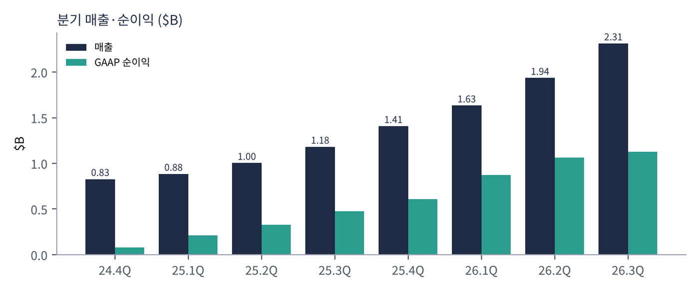
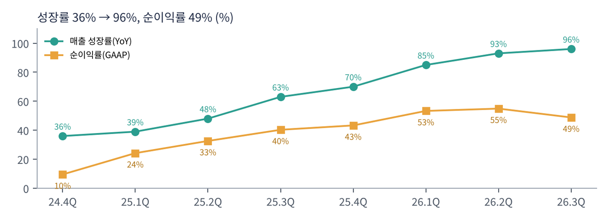
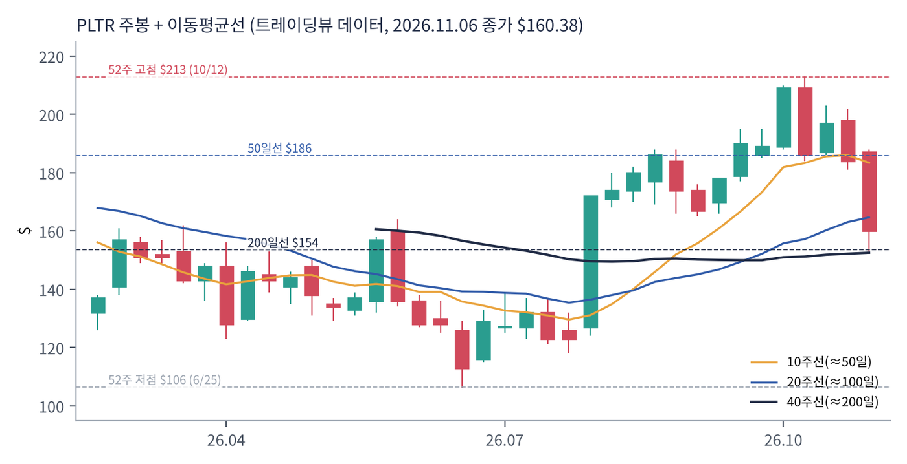
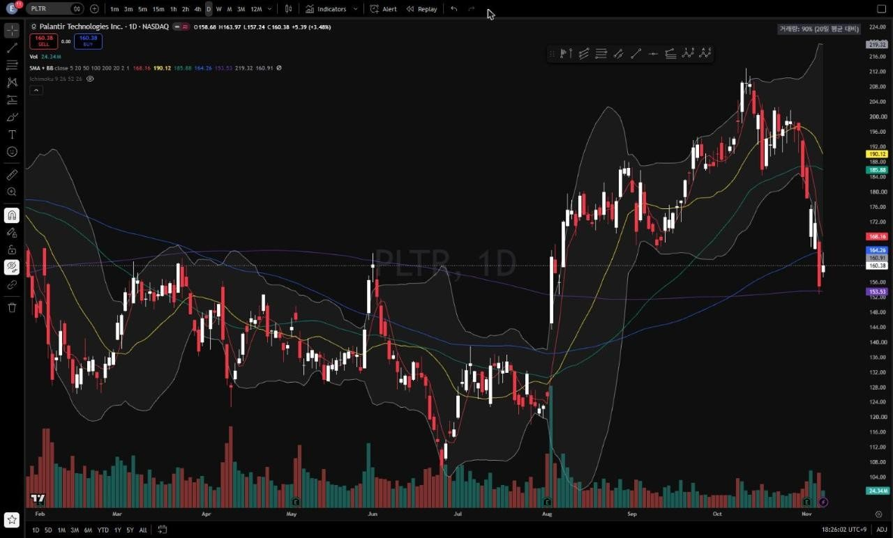
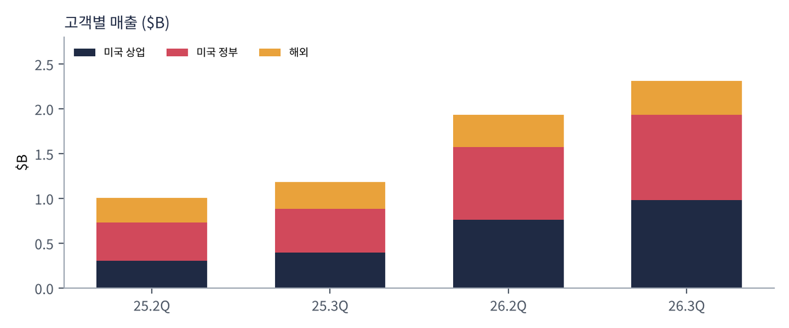

팔란티어는 미국 정보기관·국방부의 데이터 분석 소프트웨어(고담)로 시작해, 기업용 데이터 운영 플랫폼(파운드리), 이를 AI 모델과 연결하는 AI 플랫폼(AIP), 소프트웨어 배포 인프라(아폴로)를 판매한다. 2023년 AIP 출시 후 '부트캠프'(고객이 며칠 만에 실제 업무에 AI를 적용해 보는 현장 워크숍) 방식으로 기업 고객을 빠르게 늘렸다. 2025년 S&P 500에 편입됐다.
| 항목 | 내용 |
|---|---|
| 종목 | Palantir Technologies (PLTR) · 소프트웨어 · 2003년 설립 · 본사 콜로라도주 덴버 |
| 경영진 | 알렉스 카프 CEO(공동 창업자), 데이비드 글레이저 CFO |
| 시가총액 | 약 $386B · PER 125배 (11/6 종가 기준) |
| 최근 분기(3Q26) | 매출 $2.31B(+96%), 순이익 $1.13B, 조정 잉여현금흐름 $1.22B(53%) |
| 대형 계약 | 3분기 $100만 이상 계약 212건, $500만 이상 107건, $1,000만 이상 64건 |
| 분기 | 매출 | 성장률 | GAAP 순이익 | 순이익률 | GAAP 영업이익 | 특이 사항 |
|---|---|---|---|---|---|---|
| 2024.4Q | $828M | +36% | $79M | 9.5% | — | |
| 2025.1Q | $884M | +39% | $214M | 24.2% | $176M | |
| 2025.2Q | $1,004M | +48% | $327M | 32.6% | $269M | 첫 $10억 분기 |
| 2025.3Q | $1,181M | +63% | $476M | 40.3% | $393M | |
| 2025.4Q | $1,407M | +70% | $609M | 43.3% | — | TCV 사상 최대 $4.26B |
| 2026.1Q | $1,633M | +85% | $871M | 53.3% | $754M | |
| 2026.2Q | $1,935M | +93% | $1,062M | 54.9% | $912M | |
| 2026.3Q | $2,313M | +96% | $1,128M | 48.8% | $1,085M | 미국 기업 > 미국 정부 |

규모가 커질수록 성장이 빨라지는 드문 경우다. 보통 소프트웨어 회사는 매출이 커지면 성장률이 내려간다. 팔란티어는 2년 동안 분기 매출이 2.8배가 되는 사이 성장률이 36%에서 96%로 올라갔다. 고객이 AIP를 시범 적용한 뒤 계약을 몇 배로 늘리는 '확장' 구조가 작동하고 있기 때문이다.

이익률은 정점 부근이다. GAAP 순이익률이 9.5%에서 55%까지 올랐다가 3분기 49%로 조금 내려왔다. 영업이익률은 47%로 여전히 높다. 4분기 가이던스의 조정 영업이익률 62%는 성장과 이익을 동시에 내는 '룰 오브 40' 기준(성장률+이익률 40 이상)을 네 배 가까이 넘는다.
| 분기 | 조정 잉여현금흐름 | 룰 오브 40 | TCV(신규 계약 총액) | 미국 기업 잔여 계약가치 |
|---|---|---|---|---|
| 2025.4Q | — | — | $4.26B (+138%) | — |
| 2026.1Q | $925M (57%) | 145 | $2.41B (+61%) | $4.92B (+112%) |
| 2026.2Q | $1,220M (63%) | 155 | $3.37B (+49%) | $6.24B (+124%) |
| 2026.3Q | $1,216M (53%) | 158 | $2.92B (+6%) | $6.52B (+79%) |
주가가 빠진 이유가 여기에 있다. 매출은 +96%인데 앞으로의 매출을 만드는 신규 계약 총액(TCV)은 +61% → +49% → +6%로 빠르게 둔화했다. 미국 기업 고객의 잔여 계약가치(RDV)도 전 분기 대비 +4%에 그쳤다. 매출이 계약보다 빠르게 늘고 있으니, 1~2년 뒤 성장률이 내려갈 수 있다는 신호로 읽힌다.
| 항목 | 4Q26 | 2026년 연간 |
|---|---|---|
| 매출 | $2.649~2.653B (+88%) | $8.530~8.534B (+91%) |
| 미국 기업 매출 | $3.559B 이상 (+143%) | |
| 조정 영업이익 | $1.640~1.644B | $5.245~5.249B |
| 조정 잉여현금흐름 | $4.8~5.0B |
트레이딩뷰 PLTR 일봉 300개(2025.8 ~ 2026.11.6)와 주봉으로 계산했다. 결론부터 말하면 이번 4개 종목 중 유일하게 장기 추세가 살아 있다. 다만 10월 고점 $213 이후 단기 조정이 깊어져 200일선 시험을 앞두고 있다.


위: 주봉 재구성 차트. 아래: 트레이딩뷰 일봉 캡처(작도 없이 이동평균선·볼린저밴드만 표시).
| 이동평균 | 값 | 종가 대비 | 해석 |
|---|---|---|---|
| 5일선 | $168.2 | -4.6% | 실적 후 급락 반영 |
| 20일선 | $190.1 | -15.6% | 10월 고점권 평균 |
| 50일선 | $185.9 | -13.7% | 8~10월 상승 추세선 |
| 100일선 | $164.3 | -2.4% | 바로 위 — 1차 회복 목표 |
| 200일선 | $153.5 | +4.5% | 아직 위 — 핵심 지지 |
배열은 20일 > 50일 > 5일 > 100일 > 주가 > 200일이다. 주봉 흐름: 2025년 하반기 $155~199 고점권 → 2026년 2월 소프트웨어 업종 'AI 대체 우려' 매도로 $128 → 4월 $123 → 6/25 $106 연저점(1년 고점 대비 -47%) → 8월 2분기 실적(+93%)으로 한 주 만에 $123 → $174 → 10/12 $213 신고가 → 10월 말~11월 실적 주에 $188 → $153(-18%) 후 $160 마감.
| 규칙 | 기준 | 현재 값 | 신호 |
|---|---|---|---|
| 장기 추세 필터 | 종가 vs 200일선 | $160.4 > $153.5 | 매수 |
| 중장기 교차 | 50일선 vs 200일선 | $185.9 > $153.5 | 매수 |
| 단기 교차 | 20일선 vs 50일선 | $190.1 > $185.9 | 매수 |
| 돈키언 채널 | 55일 고가 $212.9 / 저가 $152.6 | 중간값 $182.8 아래 | 매도 |
| 1개월 모멘텀 | 21거래일 수익률 | -19.3% (기준 $198.8) | 매도 |
| 3개월 모멘텀 | 63거래일 수익률 | -8.5% (기준 $175.2) | 매도 |
| 6개월 모멘텀 | 126거래일 수익률 | +16.4% (기준 $137.8) | 매수 |
| 12개월 모멘텀 | 252거래일 수익률 | -14.6% (기준 $187.9) | 매도 |
| 종합 (8개 평균) | 0.00 | 중립 | |
해석: 이동평균선 기반 신호(추세 필터·교차 3개)는 모두 매수이고, 가격 모멘텀 신호는 대부분 매도다. 전형적인 '상승 추세 속 조정' 패턴이다. 다만 20일선이 빠르게 내려오고 있어 1~2주 안에 20/50일 교차가 매도로 바뀔 가능성이 높다(점수 -0.25). 반대로 12월 이후 12개월 모멘텀 기준가가 $165~180, 이어서 2월 $130대로 내려가면 매수로 바뀌기 쉽다. 14일 ATR $9.95(6.2%).
| 가격 | 무엇이 바뀌나 | 의미 |
|---|---|---|
| $153.5 이탈 | 200일선 붕괴 | 장기 추세 필터 매도 — 점수 -0.25 이하로 하락 |
| $152.6 이탈 | 55일 저점 붕괴 | 200일선과 겹친 이중 지지 붕괴 |
| $175 | 3개월 모멘텀 기준 | 회복 시 매수 전환 |
| $183 ~ 188 | 돈키언 중간값·12개월 기준·50일선 | 회복 시 점수 +0.5 이상 |
| 구분 | 가격대 | 근거 |
|---|---|---|
| 저항 2 | $186 ~ 190 | 50·20일선, 실적 전 가격 |
| 저항 1 | $164 ~ 175 | 100일선, 3개월 기준가 |
| 지지 1 | $152 ~ 154 | 200일선, 55일 저점 |
| 지지 2 | $123 ~ 137 | 8월 급등 전 박스, 6개월 기준가 |
기본 판단: 실적은 최고, 가격은 최고 수준의 기대를 반영. 2026년 매출 가이던스 $8.53B 기준 시가총액은 매출의 약 45배다. 이 가격을 정당화하려면 성장률 80~90%가 1~2년 더 이어져야 한다. TCV 둔화가 일시적인지가 핵심이고, 200일선은 그 판단을 시장이 대신 내려주는 자리다.
| 가격대 | 시나리오 | 대응 |
|---|---|---|
| $190 이상 | 추세 재개 | 2차 익절 후 잔여 추종 |
| $164 ~ 188 | 회복 구간 | $175 돌파 시 추가, 1차 익절 |
| $150 ~ 160 | 200일선 지지 | 분할 매수 70% |
| $143 이하 종가 | 추세 붕괴 | 손절 |
| $123 이하 | 연저점권 재시험 | 관망 |

| 고객군 | 돈을 버는 방식 | 3Q26 | 성장 |
|---|---|---|---|
| 미국 기업 | 파운드리·AIP 구독. 부트캠프로 시범 도입 → 전사 확장. 제조·헬스케어·금융·에너지 등 | $984M | +148% |
| 미국 정부 | 국방부·정보기관·보건 당국용 고담·메이븐 등. 다년 계약, 대형 프로그램 | $953M | +96% |
| 해외 | 영국 NHS·NATO 등 동맹국 정부, 해외 기업. 미국보다 성장이 느림 | $376M | +26% |
해외 매출은 전체 매출에서 미국 매출을 뺀 값이다. 성장률은 전년 동기 $298M 기준이다.
팔란티어 성장은 거의 전부 미국에서 나온다. 미국 매출 비중이 84%이고, 그 안에서 기업 고객이 정부를 처음으로 앞섰다. 1년 전 미국 기업 매출($397M)은 정부($486M)보다 작았다. 회사의 정체성이 '국방 소프트웨어'에서 '기업 AI 플랫폼'으로 넘어가는 분기였다.
팔란티어가 파는 것은 AI 모델이 아니라 'AI가 실제 업무를 할 수 있게 만드는 운영층'이다. 기업의 데이터를 공장·부품·주문·환자 같은 현실 개념과 그 관계로 정리한 '온톨로지' 위에서, AI 에이전트가 단순 답변이 아니라 승인·주문·일정 조정 같은 실제 행동을 하게 만든다.
| 축 | 내용 |
|---|---|
| 온톨로지 | 데이터를 업무 개념의 지도로 바꾸는 핵심 기술. 경쟁사가 따라 하기 어려운 차별점 |
| AIP | 어떤 LLM이든 온톨로지에 연결해 에이전트를 만드는 플랫폼 |
| 국방·주권 AI | 미국과 동맹국의 군·정보기관 AI 표준. 카프 CEO가 말하는 '소버린 AI'의 핵심 공급자 |
| 배포 방식 | 부트캠프 → 단기 성과 → 전사 확장. 영업 비용이 낮고 확장 속도가 빠름 |
| 항목 | 회사의 말 (3Q26) | 읽는 법 |
|---|---|---|
| 시장 | 카프: '소버린 AI' 흐름이 지난 30년 동안 본 것 중 가장 극적인 승자와 패자의 분리를 만들고 있다 | AI 도입 격차가 수요를 만든다 |
| 성장 | 매출 +96%, 미국 기업 +148%, 2026년 미국 기업 매출 가이던스 +143%로 상향 | 성장은 가속 중 |
| 이익 | 룰 오브 40 점수 158, 매 분기 GAAP 흑자 유지 전망 | 성장과 이익의 동시 달성 |
| 계약 | TCV $2.92B(+6%), 미국 기업 TCV $1.46B, 미국 기업 잔여 계약가치 $6.52B(+79%) | 선행 지표 둔화 |
경영진 코멘트는 모두 강하다. 숫자 하나가 약하다. TCV +6%는 4분기 사상 최대 계약($4.26B) 이후의 기저 효과일 수도 있고, 대형 고객의 확장 속도가 느려지기 시작했다는 신호일 수도 있다. 4분기 TCV가 다시 늘면 전자, 아니면 후자다.
성장의 엔진. 1년 만에 2.5배. 2026년 연간 $3.56B 이상 전망. 잔여 계약가치가 +79%로 매출 성장률(+148%)보다 느린 것이 유일한 경고다.
국방 예산의 AI·자동화 비중 확대로 가속. 다년 대형 계약 구조라 예측 가능성이 높다.
유럽 기업 시장은 여전히 느리다. 동맹국 정부 수요가 주된 성장원이다.
2026년 조정 잉여현금흐름 $4.8~5.0B 전망. 설비투자가 거의 없는 소프트웨어 구조라 매출 증가분이 바로 현금이 된다. 오라클과 정반대다.
| 경쟁/리스크 | 내용 | 강도 |
|---|---|---|
| 밸류에이션 | PER 125배, 연 매출의 약 45배. 성장 둔화 신호에 주가가 크게 반응 | 높음 |
| 계약 둔화 | TCV +6%, 미국 기업 잔여 계약가치 전 분기 대비 +4% | 중간~높음 |
| 경쟁 진입 | 오라클 AI 데이터 플랫폼의 온톨로지 자동 생성, 하이퍼스케일러·데이터브릭스·스노우플레이크의 에이전트 플랫폼 | 중간 |
| 정부 의존 | 매출의 약 절반이 정부. 예산·정치 변화에 민감 | 중간 |
| 주식보상 | 조정 지표와 GAAP 지표의 차이. 희석 관리 필요 | 참고 |
2월 4분기 실적에서 TCV가 다시 늘어나는지, 2027년 가이던스가 +60% 이상인지가 핵심이다. 차트는 200일선($153.5)을 지키는지가 먼저다.
AI 에이전트가 기업 업무에 실제로 들어가는 속도가 팔란티어 성장 속도다. 온톨로지가 업계 표준으로 굳어지면 지금의 배수도 설명이 된다. 경쟁사의 자동화 도구가 '충분히 좋은' 대안이 되면 배수가 먼저 깎일 것이다.